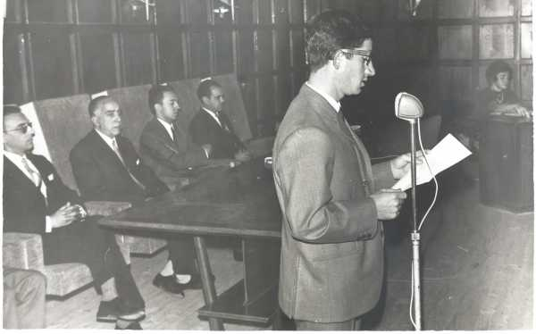

La foto se sacó el 7 de octubre de 1967 y corresponde a la apertura del curso 67/68. Los que aparecen en la foto de izquierda a derecha son: D. Julio Amado (matemáticas) D. José Barros (Coronel) D. Juan Carlos López Eisman (filosofía) D. Jaime Rosisch ( griego) Dña. Mª Teresa Legorburu (francés) Y en el centro, frente al micrófono: D. Esteban Sánchez Recio (latín). (Foto enviada por Raquel, hija de D. Esteban).
 |